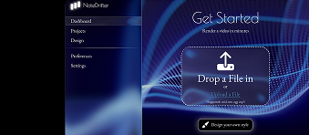
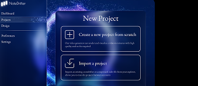
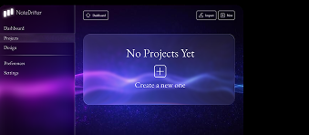
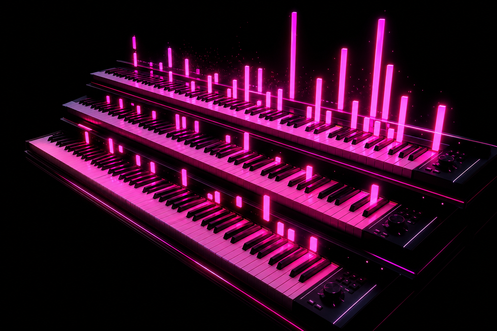
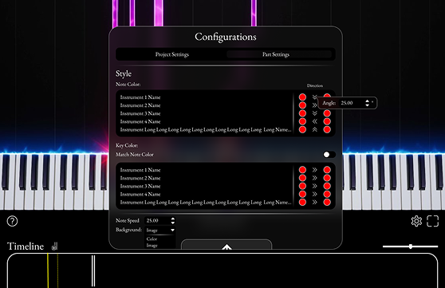
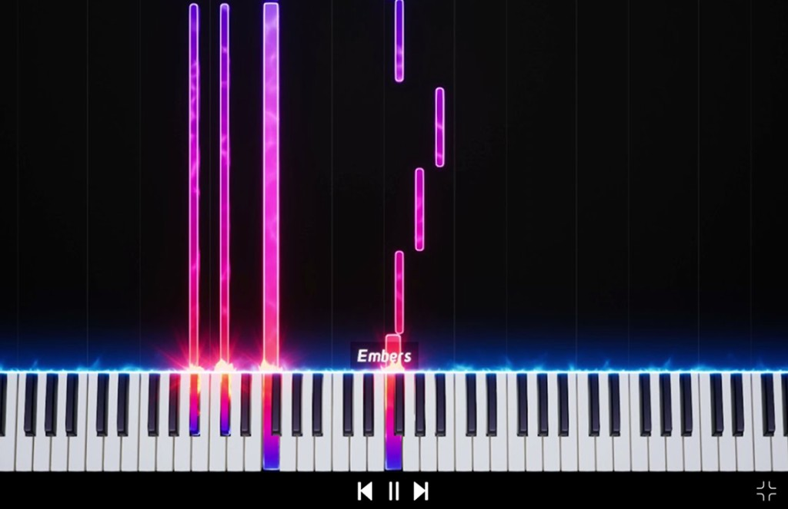

NoteDrifter turns MIDI into cinematic piano-roll visuals—neon notes, a reactive keyboard, and exports you can share. Built for creators who want motion that feels premium without a heavyweight pipeline.



Why choose us?
-
Quality
Crisp rendering with accurate timing and rich color so every performance reads clearly on screen.
-
Freedom
Customize note colors, orientation, backgrounds, and pacing so the picture matches your music—not a preset.
-
Efficiency
Responsive playback and a focused editor so you move from import to export without friction.
EDITOR EXAMPLES

You can change the color of every note, you can also change the direction of the notes.

